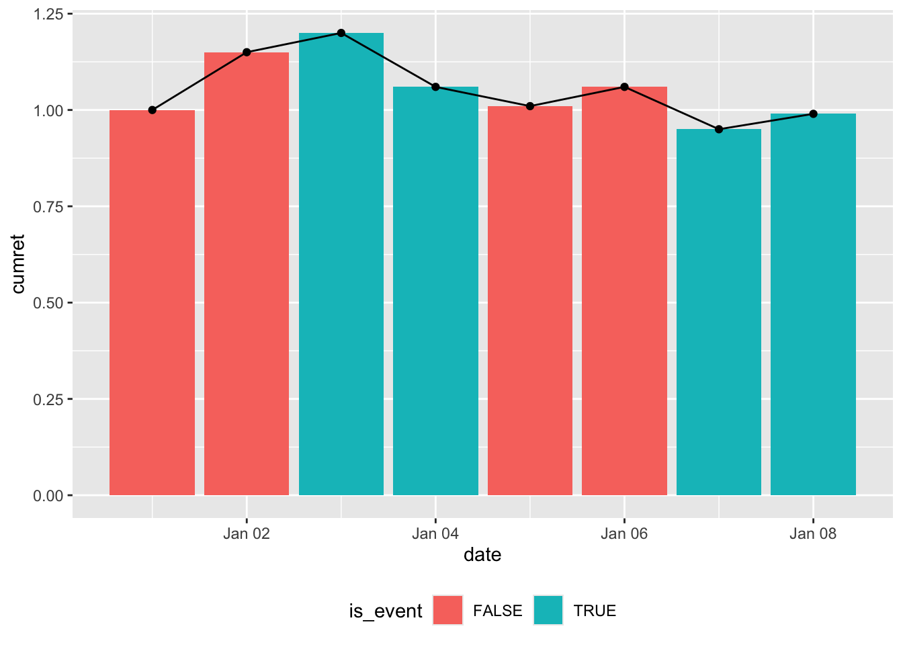
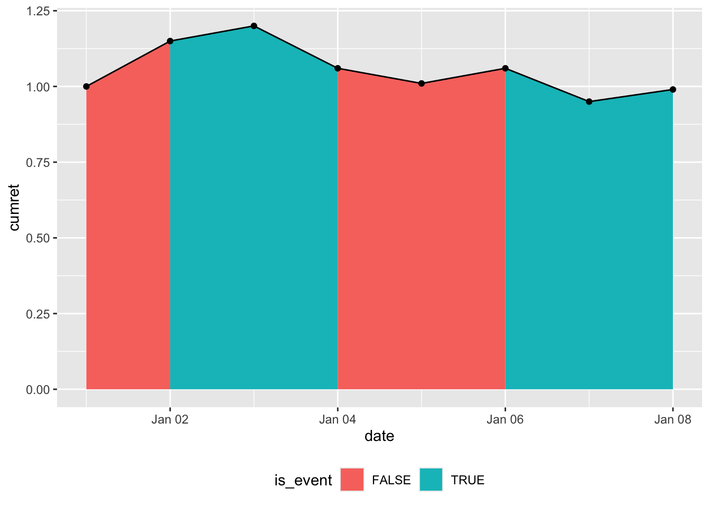
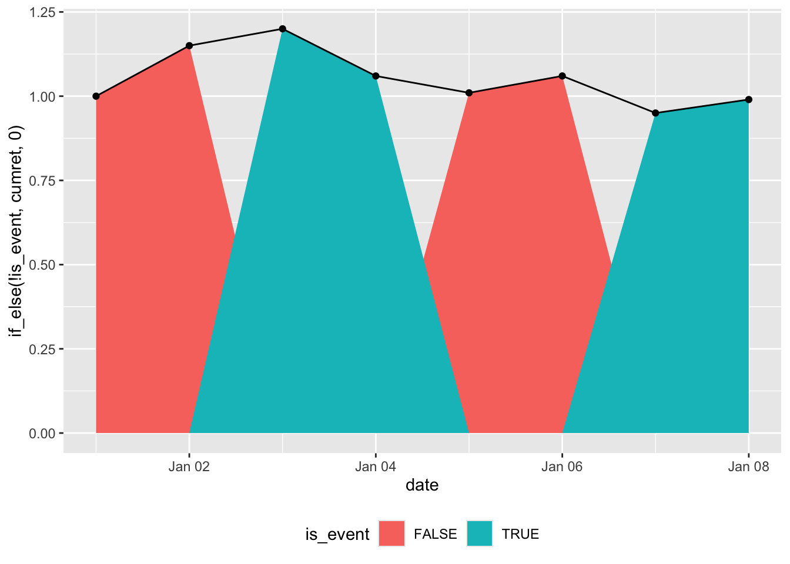
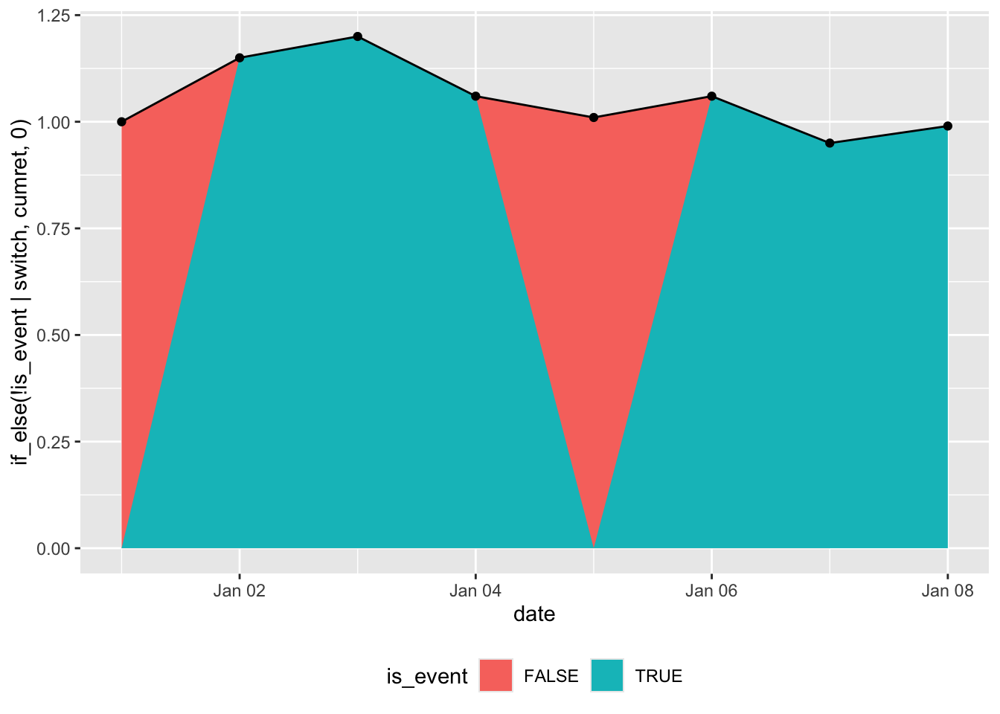

library(tidyverse)Data visualization challenge
Data visualization
ggplot2
The data we will use in this note are as follows:
df <-
tribble(
~date, ~cumret, ~is_event,
"2024-01-01", 1, FALSE,
"2024-01-02", 1.15, FALSE,
"2024-01-03", 1.20, TRUE,
"2024-01-04", 1.06, TRUE,
"2024-01-05", 1.01, FALSE,
"2024-01-06", 1.06, FALSE,
"2024-01-07", 0.95, TRUE,
"2024-01-08", 0.99, TRUE
) |>
mutate(date = as.Date(date))The data in cumret are intended to represent the “cumulative return” of a stock over time. You might think of cumret as a stock price with an initial value of 1. The most common way to represent the cumulative returns over time in a plot uses a line plot (geom_line()), often with points representing discrete observations (e.g., end-of-day stock prices), which we can show using geom_point().
In this note, we will discuss the situation where some trading days are “event days” and some are not. A question naturally arises as to how depict the performance of a stock over time in such as case while presenting information about events.
Figure 1 is an initial attempt at depicting this situation. We have cumulative returns depicted using both lines (geom_line()) and points (geom_point()) and the events are depicted as different colours in the columns (geom_col()).
However, Figure 1 has some aesthetic deficiencies or inconsistencies of presentation. First, the column graph represents data shown as points as wide bars that are flat on top. Second, using columns to represent events suggest that the points go in the middle of the events.
This second feature is inconsistent with the notion that the points are day-end prices and the events happen during the trading days. Thus a better representation would seem to be to have the bars line up between the points.
However, merely moving the bars horizontally would not address the inconsistency introduced by the first feature. In a sense, the line plot presents an idealized notion of the stock price moving in a linear fashion between two points. It would seem desirable for the representation of the events to follow this notion.
In a sense, we want a plot that simply fills the area under the line plot and uses colours to distinguish event periods from non-event periods.
df |>
arrange(date) |>
ggplot(aes(x = date, y = cumret)) +
geom_col(aes(fill = is_event)) +
geom_line() +
geom_point() +
theme(legend.position = "bottom")

I argue that Figure 2 is the plot we are looking for. Note that viewing the “events” as occurring between points means that we lose one “column” that we have in Figure 1. Of course, there is inherently a loss in “columns” with the new perspective because the number of lines between points is always one less than the number of consecutive points.
If we accept Figure 2 as the goal, our challenge here is, in a nutshell, to transform the data in df into Figure 2. In words, we are looking to “fill” the area under the line with shading that is coloured according to the value of is_event. We want the shading to be continuous with the colours “switching” immediately after the value for is_event changes.
Warning: Removed 3 rows containing missing values or values outside the scale range
(`geom_ribbon()`).Warning: Removed 2 rows containing missing values or values outside the scale range
(`geom_ribbon()`).

Our first attempt uses the code below, which produces Figure 3. One issue with Figure 3 is that it doesn’t satisfy the requirement that the colours “switch” immediately after the value for is_event changes. Instead, we have the plot ramping up and down for “event” periods between “non-event” periods, rather than going up and down vertically as in Figure 2.
df |>
arrange(date) |>
ggplot(aes(x = date, y = cumret)) +
geom_area(mapping = aes(y = if_else(!is_event, cumret, 0),
fill = FALSE)) +
geom_area(mapping = aes(y = if_else(is_event, cumret, 0),
fill = TRUE)) +
geom_line() +
geom_point() +
labs(fill = "is_event") +
theme(legend.position = "bottom")

Our second attempt uses the code below, which produces Figure 4. While Figure 4 satisfies the requirement that the colours between “switch” immediately after the value for is_event changes, we still have the issue of the plot gradually ramping up and down between dates rather than going up and down vertically.
df |>
arrange(date) |>
mutate(switch = coalesce(is_event != lead(is_event), FALSE)) |>
ggplot(aes(x = date, y = cumret)) +
geom_area(mapping = aes(y = if_else(!is_event | switch, cumret, 0),
fill = FALSE)) +
geom_area(mapping = aes(y = if_else(is_event | switch, cumret, 0),
fill = TRUE)) +
geom_line() +
geom_point() +
labs(fill = "is_event") +
theme(legend.position = "bottom")

Hints
- The variable
switchas defined in the second attempt could be useful. - Setting the “false” value in the
if_else()calls toNArather than0might help. - If you call
? geom_area, you will see discussion of the closely relatedgeom_ribbon()function. This could be useful.